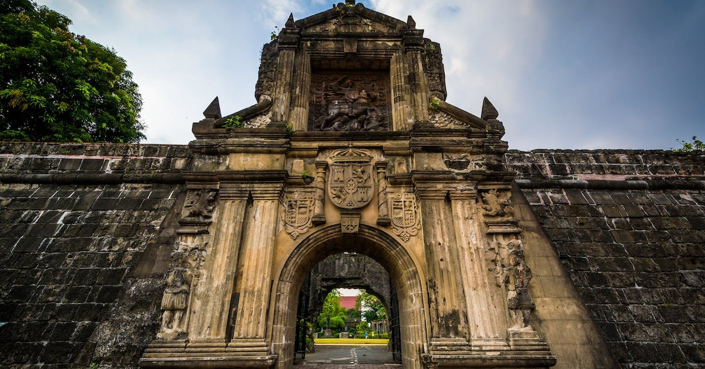

Boracay, the best beach in the Philippines, known for its smooth, fine, white sand.
Puerto Princesa is a place well-known for its marine sancuaries, beaches with white sands, and many diverse animals making it perfect for outdoor enthusiasts and nature lovers.


Intramuros is a historic walled area located at the heart of Manila, the capital city of the Philippines. It was used for political, religous, and military power when it was built during the Spanish colonial period.
Intramuros is a historic walled area located at the heart of Manila, the capital city of the Philippines. It was used for political, religous, and military power when it was built during the Spanish colonial period.
Sources: https://www.britannica.com/topic/flag-of-the-Philippines https://www.philstar.com/headlines/2018/10/14/1859944/68-boracay-hotels-get-green-light-reopening https://guidetothephilippines.ph/destinations-and-attractions/intramuros-1 https://www.asiatours.com/Puerto-Princesa/